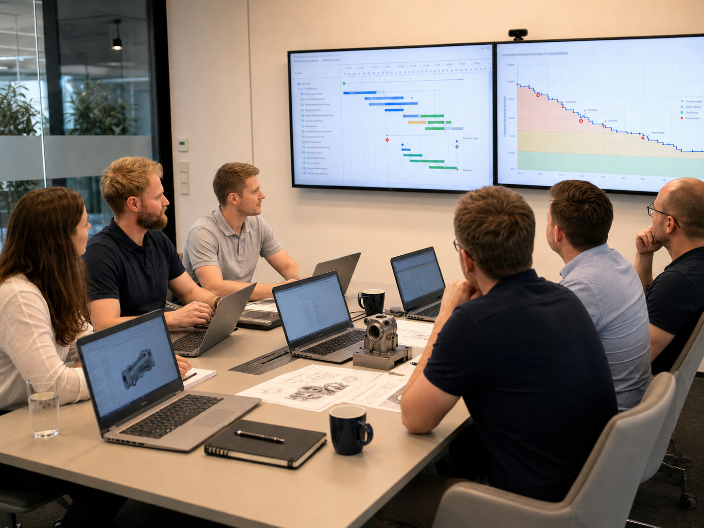

Aus technischer Unsicherheit werden belastbare Entscheidungen.
RelTest verbindet Zuverlässigkeitstechnik, Datenanalyse, DoE und Risikomanagement zu Entscheidungsgrundlagen für Entwicklung, Absicherung und Serienfreigabe.

Beratung
Methodische Unterstützung für konkrete Entwicklungs- und Absicherungsfragen.
Mehr erfahren →Langfristige Kooperation
Kontinuierliche Begleitung, Reviews und belastbare Dokumentation.
Mehr erfahren →Schulungen
Seminare für Teams, die Zuverlässigkeitsmethoden selbst anwenden wollen.
Mehr erfahren →Academy
Digitales E-Learning als skalierbarer Kompetenzaufbau.
Mehr erfahren →